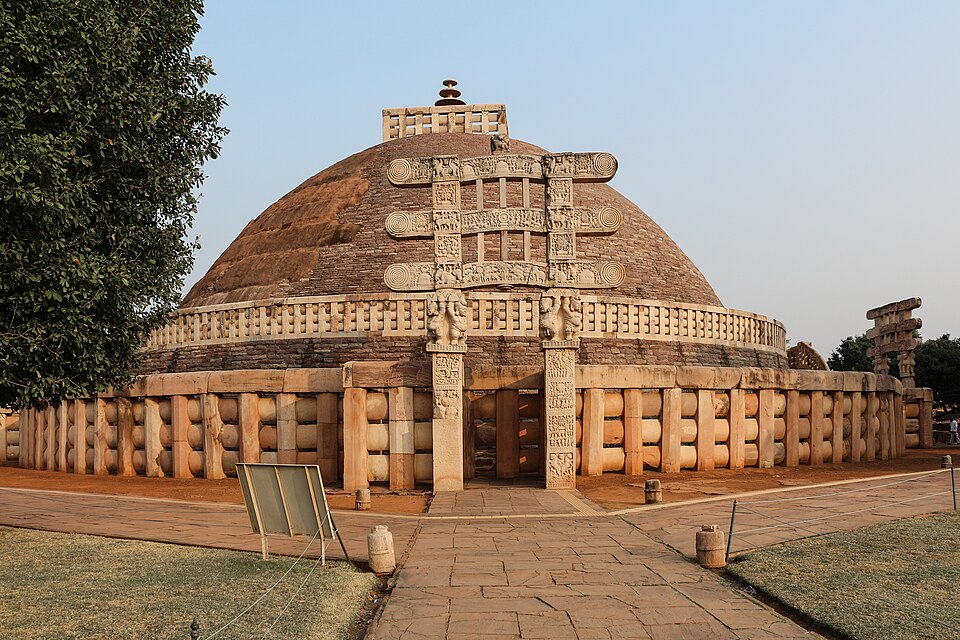
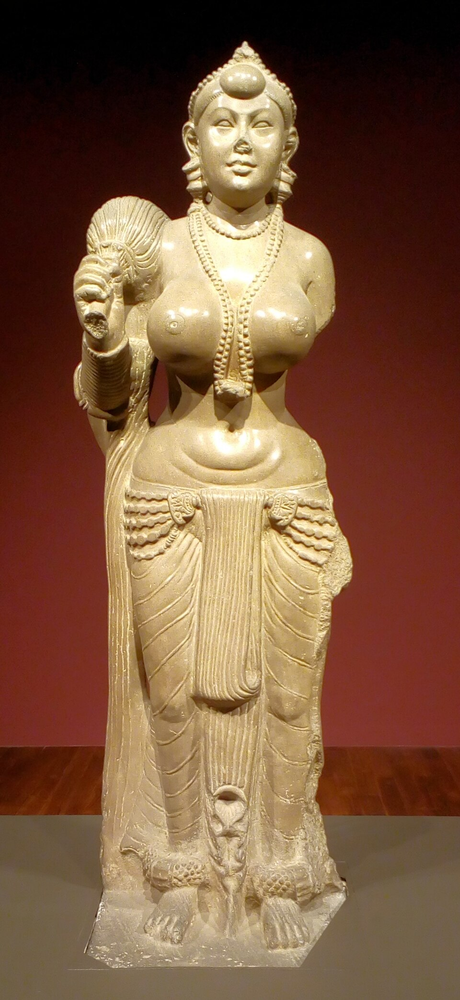

Image Viewer
Full Archaeological & Inscriptional Inspection
100%
Ancient Indian History • Module 5: The Mauryan Empire
Founded by Chandragupta Maurya with the strategic genius of Chanakya (Kautilya), the Mauryan Empire unified the Indian subcontinent into a centralized pan-Indian state. Reaching its zenith under Ashoka the Great, it substituted territorial conquest (*Bherighosha*) with ethical conquest (*Dhamma-Vijaya*).
First deciphered in 1837 by James Prinsep, revealing Ashoka's revolutionary Dhamma policy.
Lucent GK essentials covering dates, conquests, foreign diplomats, and religious transitions.
With the guidance of Chanakya / Kautilya, he overthrew the corrupt Nanda dynasty (Dhanananda) and consolidated northern India.
Known to the Greeks as Amitrochates (slayer of foes). Maintained diplomatic ties with Hellenistic monarchies and conquered southern kingdoms up to Mysore.
Previously Viceroy of Taxila and Ujjain. The traumatic Kalinga War (261 BC) caused a profound spiritual transformation from *Digvijaya* to *Dhammavijaya*.
Discovered at 8 major sites: Kalsi, Girnar, Sopara, Dhauli, Jaugada, Yerragudi, Mansehra, Shahbazgarhi.
Prohibition of animal sacrifice and bans festive gatherings (*Samaja*). State kitchen limited to two peacocks and one deer, eventually stopped altogether.
Medical treatment for humans and animals. Digging of wells and planting medicinal herbs along roads. Mentions southern kingdoms: Cholas, Pandyas, Satiyaputa, Keralaputa, and Tamraparni (Sri Lanka).
Instructs officials (Yuktas, Rajukas, Pradesikas) to tour every 5 years (*Anusamyana*) to inspect and preach Dhamma. Inculcates obedience to parents, generosity to Brahmans and Shramanas.
Proclaims that the reverberation of war drums (*Bherighosha*) has transformed into the resounding call of righteousness (*Dhammaghosha*). Proper behaviour towards elders and ascetics.
Introduces the special cadre of officers called Dhamma Mahamattas appointed in his 14th regnal year for supervising moral welfare, helping prisoners, and preventing unfair punishment.
Orders reporters (Pativedakas) to report state and public affairs to him at all hours and places: "whether eating, in the harem, in the inner chamber, or in the carriage".
Appeals for universal tolerance among all religious sects. "All sects may reside everywhere, for they all desire self-control and purity of mind".
Replaced royal pleasure tours (*Vihara-yatras* involving hunting) with pious pilgrimage tours (*Dhamma-yatras*). Marks his royal pilgrimage to Bodh Gaya (Sambodhi) in his 10th regnal year.
Condemns meaningless superstitious ceremonies performed by women during illness, weddings, or journeys. Extols the ceremony of Dhamma: proper conduct toward servants, generosity, and compassion.
Denounces the pursuit of personal fame and military glory. The only true glory is having the populace strictly observe the tenets of moral conduct and Dhamma.
Defines the gift of Dhamma (*Dhamma-dana*) as the highest conceivable gift in the universe, surpassing all material benefactions.
Celebrated plea for mutual religious concord. Condemns praising one’s own sect while denigrating others: "Whoever exalts his own religion and disparages others does severely injure his own sect".
Details the trauma of the Kalinga War in his 9th regnal year: 150,000 carried away captive, 100,000 slain, many died of hunger and grief. Expresses profound remorse and formalizes Dhamma-vijaya (conquest by righteousness).
Summarizes the objective of all inscriptions, clarifying that edicts were carved in full, medium, or abridged forms according to local terrain, stone space, and requirements.
In most edicts, he is referred to as Devanampiya Piyadassi ("Beloved of the Gods, of gracious mien"). His personal name Ashoka appears only in four minor rock edicts: Maski, Gurjara, Nittur, and Udegolam.
Commemorates Ashoka's visit to Buddha’s birthplace in Lumbini (in his 20th regnal year). The village was exempted from Bali (religious tributary tax) and its Bhaga (land produce tax) was reduced to 1/8th (from normal 1/6th).
Kautilya's seven organs of state (*Saptanga*) and the high-ranking departmental superintendents (*Adhyakshas*).
| Official Designation | Administrative Role & Portfolio | Department / Domain | Lucent Exam Significance |
|---|---|---|---|
| Samaharta | Collector-General of Revenue | Tax collection, budget preparation & expenditure | Frequently asked in UPSC/APSC |
| Sannidhata | Chief Treasury Officer | Custodian of royal treasury and royal storehouses (*Koshadhyaksha*) | Direct custodian of physical bullion |
| Sitadhyaksha | Superintendent of Crown Lands | Management of *Sita* (state agricultural farms) worked by slaves/laborers | High frequency prelims fact |
| Vyavaharika / Dharmastha | Civil Court Magistrate | *Dharmasthiya* courts handling contracts, marriages, inheritances | Civil jurisprudence |
| Pradeshta | Criminal Court Magistrate | *Kantakashodhana* ("removal of thorns") courts handling crimes, state subversion | Criminal jurisprudence |
| Akshapataladhyaksha | Accountant-General & State Archivist | Audit of accounts, archival preservation of royal edicts and land grants | Accountant general of Mauryas |
| Pautavadhyaksha | Superintendent of Weights & Measures | Standardization of weights (*Dharana*, *Karshapana*) and measures | Commercial market inspector |
| Sanstha & Sanchara | Intelligence & Espionage Cadres | Sanstha: Stationary undercover agents; Sanchara: Wandering roving spies | Kautilya's secret service network |
Megasthenes misidentified functional occupational groups as endogamous castes:
Pataliputra was governed by a municipal commission of 30 members split into 6 committees of 5 members each:
Characterized by monolithic Chunar sandstone with a distinctive mirror-like glassy polish (*Mauryan Polish*).

Zoom DetailFoundation laid by Ashoka over Buddha relics; his wife Devi was from nearby Vidisha.

Zoom DetailExhibits the world-renowned glassy Mauryan polish, currently preserved at Bihar Museum, Patna.
The Sarnath Lion Capital features 4 Asiatic lions standing back to back, adopted as India’s National Emblem.
Ashoka and his grandson Dasharatha dedicated these artificial caves hollowed out of solid granite to the Ajivika monks. Four caves in Barabar hill: Sudama Cave, Lomas Rishi Cave (with ornamental horseshoe chaitya arch), Karna Chaupar, and Visva Zopri.
Test your mastery of Mauryan edicts, officers, and historical facts.
Loading flashcard...
Click card to reveal answerLoading answer...
Click to flip backLoading quiz question...
Full Archaeological & Inscriptional Inspection